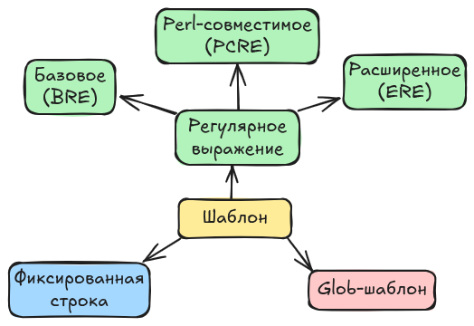

16. Поиск файлов и в файлах#
Мы уже сталкивались с поиском в контексте работы с less, man и автоподстановки bash имен файлов.
Здесь же мы расширим наши знания до поиска произвольных файлов по именам и атрибутам и содержимому в этих файлах.
С поиском вы столкнетесь в следующих рабочих ситуациях:
найти файл в системе, когда известна только часть его имени;
найти строку в исходном коде, настройках или журнале;
отобрать из вывода команды только интересующие строки;
проанализировать журналы сборки программ и работы серверов.
В этом разделе мы познакомимся с регулярными выражениями и утилитами grep, find и locate.
Шаблоны для поиска#
Шаблон – это общее правило или образец, по которому строка проверяется на соответствие. Существуют разные способы записи шаблона, некоторые из которых показаны на рисунке ниже.

Фиксированная строка – это вид шаблона, который интерпретируется буквально как строка. С помощью такой строки мы задаем образец поиска, но не правило.
Регулярное выражение – это вид шаблона, записанный на специальном формальное языке. Оно удобно, когда мы не до конца знаем что ищем, но известны некоторые особенности подстроки, например:
располагается в начале строки, конце или середине;
состоит только из определенных символов;
известна длина.
Регулярное выражение принимают утилиты grep, find.
Утилита проверяет каждую строку текста на соответствие шаблону и, если строка подходит, включает ее в результат.
Регулярные выражения не следует путать с подстановкой имен файлов.
В подстановке * заменяет любое количество любых символов, а в регулярном выражении * означает повторение предыдущего элемента.
Кроме того, подстановку выполняет командная оболочка до запуска команды, а регулярное выражение интерпретирует сама утилита.
Синтаксис BRE#
Основные элементы регулярных выражений:
Элемент |
Значение |
|---|---|
|
любой одиночный символ |
|
ноль или более повторений предыдущего элемента |
|
один символ из перечисленных в скобках |
|
один символ, кроме перечисленных в скобках |
|
начало строки |
|
конец строки |
|
отмена специального значения следующего символа |
Например, ^d соответствует строкам, начинающимся с символа d, а \.c$ – строкам, заканчивающимся на .c.
Выражение [0-9] обозначает одну цифру, [A-Za-z] – одну латинскую букву.
Точка в регулярном выражении означает любой символ, поэтому для поиска именно точки ее экранируют: \..
Шаблон с пробелами или специальными символами оболочки заключают в кавычки. Удобнее всего использовать одинарные кавычки, потому что оболочка не подставляет в них переменные и не выполняет подстановку имен файлов:
grep '^d' list.txt
В базовом синтаксисе grep операторы |, +, ?, () и {} требуют экранирования.
Опция -E включает расширенный синтаксис, в котором они работают как обычно.
Например, grep -E 'error|warning' build.log найдет строки, содержащие слово “error” или “warning”.
Синтаксис ERE#
Синтаксис ERE позволяет описать те же самые возможности, что и BRE, но в отличие от последнего удобен в записи.
В BRE символы +?|(){} по умолчанию являются обычными литералами.
Чтобы они стали операторами, их нужно экранировать обратным слешем.
В ERE эти же символы являются метасимволами по умолчанию.
Чтобы использовать их буквально, их нужно экранировать.
Синтаксис Glob-шаблона#
Утилита grep#
Утилита grep ищет строки, соответствующие определенному шаблону.
Общий формат команды выглядит как:
grep [параметры] шаблон [файл...]
Если файл не указан, grep читает данные из стандартного потока ввода.
Если указано несколько файлов, перед каждой найденной строкой выводится имя файла.
По умолчанию, утилита для шаблона использует BRE-синтаксис регулярных выражений.
Опция |
Описание |
|---|---|
|
выводит номер строки перед каждой найденной строкой |
|
ищет совпадение по целому слову |
|
выводит только имена файлов с совпадениями |
|
задает шаблон поиска (опцию можно повторять) |
|
использует ERE-синтаксис регулярных выражений |
|
использует фиксированную строку для поиска |
|
рекурсивно обходит каталоги |
|
рекурсивно обходить каталоги и следует по всем символическим ссылкам |
|
ищет только в файлах, имена которых соответствуют шаблону |
|
исключет файлы, имена которых соответствуют шаблону |
|
исключает каталоги, имена которых соответствуют шаблону |
|
игнорирует регистр символов |
|
выводит строки, не соответствующие шаблону |
|
выводит количество совпавших строк |
Пусть в файле main.c записана программа:
sppo@pc:~$ cat main.c
#include <stdio.h>
int main(void)
{
printf("Hello, world!\n");
return 0;
}
sppo@pc:~$ grep -n 'main' main.c
3:int main(void)
Здесь опция -n добавила к найденной строке ее номер.
Опция -w требует совпадения по целому слову.
Пусть файл words.txt содержит строки cat, catalog и concatenate.
Тогда grep 'cat' words.txt выведет все три строки, а grep -w 'cat' words.txt – только первую.
Опция -l выводит не сами строки, а имена файлов, в которых есть совпадения:
sppo@pc:~$ grep -l 'TODO' src/*.c
src/main.c
src/utils.c
Опцию -e применяют, когда шаблонов несколько или когда шаблон начинается с символа -:
grep -e 'error' -e 'warning' build.log
Эквивалентная запись с расширенными регулярными выражениями: grep -E 'error|warning' build.log.
Опция -r включает рекурсивный поиск по каталогу, а -R дополнительно следует по всем символическим ссылкам.
Например, команда grep -rn 'TODO' src/ найдет все строки с TODO в каталоге src и выведет их номера.
Для -R будьте осторожны: переход по ссылкам может привести к повторному обходу одних и тех же файлов.
При рекурсивном поиске полезно ограничить набор файлов.
Опции --include и --exclude задают шаблоны имен файлов, а --exclude-dir – имена каталогов:
grep -rn --include='*.c' --include='*.h' 'TODO' src/
grep -rn --exclude-dir='.git' --exclude='*.log' 'error' .
Первая команда ищет только в файлах с расширениями .c и .h, вторая исключает каталог .git и все файлы с расширением .log.
Кроме перечисленных опций, часто используют:
-i– игнорировать регистр символов;-v– выводить строки, не соответствующие шаблону;-c– подсчитывать число совпавших строк вместо их вывода.
Например, число процессоров в системе можно подсчитать командой:
sppo@pc:~$ grep -c '^processor' /proc/cpuinfo
8
Файл /proc/cpuinfo содержит информацию о процессорах.
Это значение используют, например, для параллельной сборки программ утилитой make с опцией -j.
grep также удобно применять в конвейере, когда нужно отфильтровать вывод другой команды:
sppo@pc:~$ ps -e | grep 'kworker'
В отличие от поиска по файлам, здесь grep читает стандартный поток ввода.
Рассмотренные в этом разделе опции утилиты grep:
Утилита find#
Утилита find ищет файлы и каталоги в дереве каталогов.
Она умеет отбирать объекты не только по имени, но и по типу, размеру, времени изменения, правам доступа и другим признакам, а также выполнять над найденными объектами действия.
Общий формат команды:
find [каталог...] [выражение]
Если каталог не указан, поиск начинается с текущего каталога.
Опция -type задает тип объекта:
-type f– обычный файл;-type d– каталог;-type l– символическая ссылка.
Команда find ~ -type d выводит все каталоги в домашнем каталоге.
Команда find /etc -type f -name '*.conf' ищет в /etc обычные файлы с расширением .conf.
Опция -name задает шаблон имени.
Шаблон заключают в кавычки, чтобы оболочка не выполнила подстановку имен файлов до запуска find.
Опция -iname делает сравнение нечувствительным к регистру.
Опция -size отбирает файлы по размеру.
Размер указывают в блоках по 512 байт, а с суффиксами – в других единицах:
c– байты;k– килобайты;M– мегабайты;G– гигабайты.
Перед числом ставят знак + (больше) или - (меньше).
Например, find ~ -type f -size +100M находит файлы размером более 100 мегабайт.
Несколько условий по умолчанию объединяются логическим “И”.
Логическое “ИЛИ” задают опцией -o, отрицание – символом !.
Сложные условия группируют скобками, которые экранируют от оболочки:
find . -type f \( -name '*.c' -o -name '*.h' \)
Эта команда найдет все файлы с расширениями .c и .h в текущем каталоге и его подкаталогах.
Опция -maxdepth ограничивает глубину поиска, а -mtime – время последнего изменения в сутках:
find . -maxdepth 2 -type f
find /var/log -type f -name '*.log' -mtime +7
Вторая команда найдет журналы, измененные более семи дней назад.
По умолчанию find выводит пути найденных объектов.
Опция -exec позволяет выполнить над каждым найденным объектом произвольную команду:
find . -type f -name '*.tmp' -exec rm -v {} \;
Здесь {} заменяется на путь к очередному найденному файлу, а \; завершает команду.
Вместо удаления можно сначала вывести список и проверить его:
find . -type f -name '*.tmp' -print
Для удаления у find есть и собственное действие -delete:
find . -type f -name '*.tmp' -delete
Оно должно стоять после всех условий отбора, иначе можно удалить не то, что планировалось.
Перед выполнением таких команд всегда проверяйте результат с -print.
Если при обходе встречаются каталоги, недоступные пользователю, find отправляет сообщения об ошибках в стандартный поток ошибок.
Их можно отключить перенаправлением в системную корзину:
find / -name '*.conf' 2> /dev/null
find выполняет поиск в реальном времени, поэтому всегда видит текущее состояние файловой системы.
Платой за это является скорость: обход большого дерева каталогов может занять заметное время.
Утилита locate#
Утилита locate ищет файлы по имени, используя заранее подготовленную базу данных с путями.
Поиск в базе происходит значительно быстрее обхода файловой системы, поэтому locate удобна для быстрого поиска известного файла.
sppo@pc:~$ locate main.c
/home/sppo/projects/hello/main.c
/usr/src/linux/main.c
Если шаблон не содержит метасимволов, locate находит все пути, содержащие эту строку.
Если метасимволы есть, шаблон должен соответствовать всему пути, поэтому его обычно начинают и заканчивают символом *.
Опция -i игнорирует регистр, а -l ограничивает количество выводимых строк:
locate -i readme.md
locate -l 5 '*.pdf'
Главный недостаток locate – база данных может устаревать.
Файл, созданный после последнего обновления базы, не будет найден, а удаленный файл может все еще отображаться в результатах.
Базу обновляет команда updatedb; для записи в системный каталог ей нужны права суперпользователя:
sudo updatedb
Обычно база обновляется автоматически по расписанию.
Утилита locate входит в пакеты mlocate или plocate и может быть не установлена в системе.
locate ищет только по имени и пути, тогда как find умеет учитывать тип, размер и время изменения.
Поэтому locate применяют для быстрого поиска по имени, а find – когда нужен точный отбор по свойствам файлов или действие над ними.
Вопросы для самоконтроля#
Что такое регулярное выражение?
Чем регулярное выражение отличается от подстановки имен файлов?
Что означают символы
.,*,^,$,[...]и\в регулярном выражении?Для чего применяют утилиту
grepи какой у нее формат команды?Откуда
grepберет данные, если файл не указан?Как вывести номера строк, искать слово целиком и выводить только имена файлов с совпадениями?
Как задать несколько шаблонов поиска?
Чем отличаются опции
-rи-Rутилитыgrep?Как ограничить рекурсивный поиск
grepопределенными расширениями и исключить каталог?Как с помощью
grepподсчитать строки, игнорировать регистр и инвертировать выборку?Для чего применяют утилиту
findи какой у нее формат команды?Как найти файлы, каталоги и символические ссылки?
Как найти файлы по имени и по размеру?
Как объединить несколько условий в
findс помощью “И”, “ИЛИ” и отрицания?Как выполнить команду над каждым найденным файлом?
Почему перед использованием
find -deleteрекомендуется вывести найденные файлы?Как отключить сообщения
findо недоступных каталогах?Чем
locateотличается отfindи в каких случаях его применяют?Почему
locateможет не найти только что созданный файл и как обновить базу данных?Какой код завершения возвращает
grep, если совпадений не найдено?
Упражнения#
Подсчитайте количество файлов, каталогов, скрытых файлов и скрытых каталогов в домашнем каталоге.
Найдите в домашнем каталоге все файлы размером более 100 МБ. Выведите их размер и путь, отсортировав по убыванию размера.
Найдите все пустые файлы и каталоги в текущем каталоге.
Найдите файлы, измененные за последние сутки.
Найдите в проекте из предыдущих занятий все строки с комментариями
TODOиFIXME. Пронумеруйте строки и исключите каталогиbuildи.git.Подсчитайте количество файлов с расширениями
.c,.h,.cppи.hppв проекте.Подсчитайте суммарное количество строк в исходных файлах проекта.
Найдите все сломанные символические ссылки в домашнем каталоге.
Найдите 10 самых больших файлов в домашнем каталоге.
Выведите список расширений файлов проекта без повторений и подсчитайте количество файлов для каждого расширения.
Найдите в журнале сборки все строки с ошибками и предупреждениями. Подсчитайте их количество отдельно.
Проверьте, какие файлы в каталоге
/etcсодержат заданную строку. Ограничьте поиск файлами с расширением.confи отключите сообщения о недоступных каталогах.Подсчитайте количество процессоров в системе и запустите сборку проекта с параллельным выполнением.
Создайте новый файл, попробуйте найти его утилитой
locate, обновите базу данных и повторите поиск.Сравните время выполнения поиска одного и того же файла утилитами
findиlocate.Продемонстрируйте коды завершения
grepпри наличии и отсутствии совпадений.Создайте в каталоге несколько файлов с расширением
.tmp, выведите их список утилитойfind, а затем удалите.